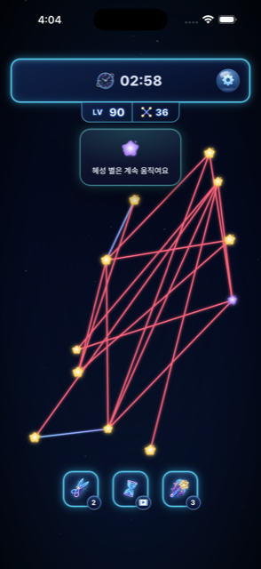
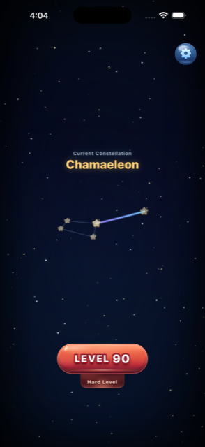

Game
Crossless
선을 당겨, 별을 풀어보세요.
Crossless는 선이 겹치지 않게 엉켜있는 별을 푸는 퍼즐이에요. 잔잔한 음악과 함께 별을 옮기다 보면, 어느새 집중하고 있는 자신을 발견하게 될 거예요.
무엇을 하나요

엉킨 별을 드래그해서 교차를 없애요

레벨마다 실제 별자리가 하나씩 밝혀져요
레벨이 쌓일수록
고정된 별
숨겨진 선
연쇄 반응
흐르는 혜성
새로운 규칙이 하나씩 늘어나요. 막히면 아이템으로 도움을 받을 수 있어요.